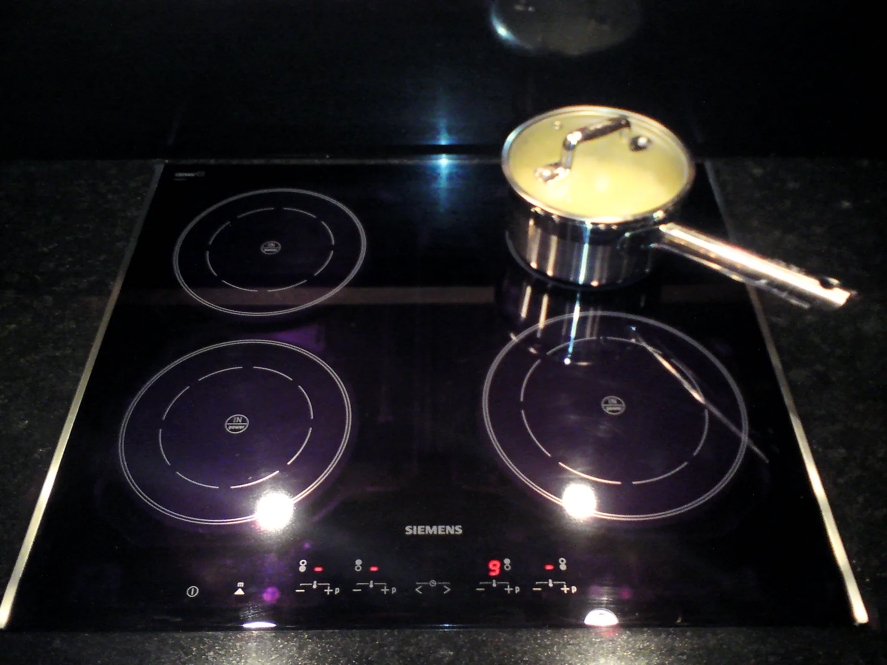

Soveltava luku: langaton lataus, induktioliesi ja kuituyhteys
Miksi puhelin latautuu ilman johtoa, kattila kuumenee ilman liekkiä ja nettiyhteys kulkee valona lasikuidussa?
Pohjatiedot
- Muuttuva magneettivuo indusoi käämiin jännitteen $e = -N \cdot \Delta\Phi : \Delta t$luku Sähkömagneettinen induktio
- Muuttuva magneettikenttä synnyttää johteeseen pyörrevirtoja, jotka muuttavat sähköenergiaa sisäenergiaksiluku Lenzin laki ja pyörrevirrat
- Valokuidussa valo etenee ytimessä kokonaisheijastuen nopeudella $v = c : n$luku Kokonaisheijastuminen ja valokuitu
Ydinpolku: etene vaiheiden mukaan. Valinnainen-merkityt tehtävät tarjoavat lisäharjoittelua. Valinnaisia tehtäviä 4.
Pohdinta
Keittiön työtasolla puhelin latautuu pyöreän alustan päällä ilman johtoa, induktiolieden teräskattilassa vesi kiehuu, vaikka mikään ei hehku, ja seinän reitittimeen tuleva nettiyhteys kulkee valona ohuessa lasikuidussa. Jos puhelinta nostetaan alustalta muutama senttimetri, lataus katkeaa. Jos teräskattilan tilalle nostetaan alumiinikattila, liesi ei lämmitä sitä. Kuidussa valo taas kulkee kymmeniä kilometrejä ennen kuin sitä on vahvistettava.
Mikä fysiikan ilmiö on kunkin laitteen takana, ja mikä rajoittaa sen toimintaa?
Valinnainen Kertaa: muuntaja
Ennusta
Tee ennusteet ennen tutkimista 4 kysymystä
Ennuste 1: puhelin irti laturista
Ennuste 2: käämin koko
Ennuste 3: miksi kattila kuumenee
Ennuste 4: valo 100 kilometrin kuidussa
Tutki
Langattoman laturin lähetinkäämi ja puhelimen vastaanotinkäämi sivulta leikattuina. Muuta käämien etäisyyttä ja lähetinkäämin kokoa ja seuraa vastaanotinkäämin jännitettä.
Simulaatio
Käyttöohje
Säädä käämien välistä etäisyyttä $z$ ja lähetinkäämin sädettä $R_1$. Vastaanotinkäämin säde on aina $20\,\text{mm}$. Vihreät viivat ovat lähetinkäämin magneettikentän kenttäviivoja hetkellä, jolloin virta on suurimmillaan. Viivat on piirretty niin, että jokaisen kahden viivan väliin jää yhtä suuri vuo, joten vastaanottimen läpi kulkevien viivojen määrä kertoo vuon suuruuden. Ne viivat, jotka kulkevat vastaanottimen läpi, on piirretty tummemmin. Oikealla kuvaaja näyttää jännitteen huippuarvon $e_0$ etäisyyden funktiona valitulla lähetinkäämillä, ja piste on nykyinen etäisyys. Lukemissa näet vuon huippuarvon $\Phi_0$ vastaanotinkäämin yhden kierroksen läpi, jännitteen huippuarvon $e_0$ ja sen, kuinka monta prosenttia $e_0$ on saman käämin arvosta $3\,\text{mm}$:n etäisyydellä.
Mallin oletukset
Kummassakin käämissä on $10$ kierrosta, ja kierrokset ajatellaan ohuiksi ympyröiksi käämin säteellä. Käämit ovat samalla akselilla, eli vastaanotin on suoraan lähettimen yläpuolella. Lähetinkäämissä kulkee sinimuotoinen vaihtovirta, jonka huippuarvo on $1{,}0\,\text{A}$ ja taajuus $140\,\text{kHz}$, ja virta pysyy samana kaikilla etäisyyksillä. Vastaanotinkäämiä ei ole kytketty kuormaan, joten siinä ei kulje virtaa, eikä se muuta lähettimen kenttää. Käämien välissä on ilmaa: ferriittilevyjä ja puhelimen metalliosia ei ole mallissa. Kuva on mittakaavassa. Lukemat ovat mallin laskemia arvoja, eivät mittauksia.
Laskennan selitys
Malli laskee lähetinkäämin magneettikentän ja laskee yhteen sen vuon vastaanotinkäämin yhden kierroksen ympäröimän pinnan läpi. Tulos on vuon huippuarvo $\Phi_0$, joka riippuu käämien säteistä ja etäisyydestä $z$. Koska virta vaihtelee sinimuotoisesti, myös vuo vaihtelee sinimuotoisesti samalla taajuudella. Vastaanotinkäämin jännitteen huippuarvo on siksi sama kuin generaattorissa:
$$e_0 = N_2 \cdot 2\pi f \cdot \Phi_0$$
missä $N_2 = 10$ on vastaanotinkäämin kierrosten lukumäärä ja $f = 140\,\text{kHz}$. Prosenttiluku on $e_0$ jaettuna saman lähetinkäämin jännitteellä etäisyydellä $3\,\text{mm}$.
Koe 1: etäisyys
Testaa ennuste 1. Lähetinkäämin säde on $20\,\text{mm}$; muuta vain etäisyyttä $z$. Kirjaa ainakin etäisyydet $3\,\text{mm}$, $10\,\text{mm}$, $20\,\text{mm}$ ja $30\,\text{mm}$. Seuraa myös, montako kenttäviivaa kulkee vastaanottimen läpi.
Alkutila: etäisyys $z$ = $3\,\text{mm}$, lähetinkäämin säde $R_1$ = $20\,\text{mm}$. Vakiona: lähetinkäämin säde $R_1$. Muutetaan: etäisyys $z$.
| etäisyys $z$ | $\Phi_0\ (\mu\text{Wb})$ | $e_0$ $(\text{V})$ | osuus $(\%)$ |
|---|
Kuinka monta prosenttia $3\,\text{mm}$:n etäisyyden jännitteestä on jäljellä, kun etäisyys on $20\,\text{mm}$? Laske taulukkosi jännitteistä.
Vihje 1: ohjaava kysymys
Etsi taulukosta jännitteen huippuarvot etäisyyksillä $3\,\text{mm}$ ja $20\,\text{mm}$.
Vihje 2: mikä yhteys
Osuus on $e_0(20\,\text{mm}) : e_0(3\,\text{mm})$ kerrottuna sadalla.
Vihje 3: välivaihe
$0{,}869\,\text{V} : 4{,}40\,\text{V}$ ja tulos prosentteina.
Näytä ratkaisu
Annettu
simulaation lukemat lähetinkäämin säteellä $R_1 = 20\,\text{mm}$: $e_0 = 4{,}404\,\text{V}$ etäisyydellä $3\,\text{mm}$ ja $e_0 = 0{,}8692\,\text{V}$ etäisyydellä $20\,\text{mm}$
Kysytty
jäljellä oleva osuus jännitteestä prosentteina
Periaate
Lähetinkäämin virta pysyy samana, joten jännitteiden suhde kertoo, kuinka paljon vuo vastaanottimen läpi on pienentynyt. Jännite on verrannollinen vuohon, koska $e_0 = N_2 \cdot 2\pi f \cdot \Phi_0$ ja $N_2$ ja $f$ pysyvät samoina.
Kaava
osuus $= \dfrac{e_0(20\,\text{mm})}{e_0(3\,\text{mm})} \cdot 100\,\%$
Muunnokset
Ei tarvita: kumpikin jännite on voltteina, ja yksikkö supistuu.
Sijoitus
osuus $= \dfrac{0{,}8692\,\text{V}}{4{,}404\,\text{V}} \cdot 100\,\% = 19{,}74\,\%$
Vastaus
noin $19{,}7\,\%$ eli noin viidesosa, kolmella merkitsevällä numerolla kuten lukemat.
Järkevyys
Lukema osuus näyttää etäisyydellä $20\,\text{mm}$ saman arvon $19{,}7\,\%$. Kuvassa vastaanottimen läpi kulkee $3\,\text{mm}$:n päässä kuusi kenttäviivaa ja $20\,\text{mm}$:n päässä vain yksi, mikä sopii noin viidesosaan.
Koe 2: lähetinkäämin koko
Testaa ennuste 2. Etäisyys on $20\,\text{mm}$; muuta vain lähetinkäämin sädettä $R_1$. Kirjaa ainakin säteet $10\,\text{mm}$, $20\,\text{mm}$, $30\,\text{mm}$, $35\,\text{mm}$ ja $40\,\text{mm}$. Katso, miltä kenttäviivat näyttävät suurella ja pienellä käämillä.
Alkutila: etäisyys $z$ = $20\,\text{mm}$, lähetinkäämin säde $R_1$ = $10\,\text{mm}$. Vakiona: etäisyys $z$. Muutetaan: lähetinkäämin säde $R_1$.
| lähetinkäämin säde $R_1$ | $\Phi_0\ (\mu\text{Wb})$ | $e_0$ $(\text{V})$ |
|---|
Johtopäätös: mikä rajoittaa langatonta latausta
Kirjoita taulukoidesi perusteella: miten vastaanotinkäämin jännite muuttuu, kun etäisyys kasvaa, ja miten lähetinkäämin koko vaikuttaa siihen $20\,\text{mm}$:n päässä? Selitä kenttäviivojen avulla, miksi.
Mallivastaus
Kun lähetinkäämin säde oli $20\,\text{mm}$, jännite pieneni etäisyyden kasvaessa jyrkästi: $3\,\text{mm}$:n päässä se oli $4{,}40\,\text{V}$, $10\,\text{mm}$:n päässä $1{,}96\,\text{V}$, $20\,\text{mm}$:n päässä $0{,}869\,\text{V}$ ja $30\,\text{mm}$:n päässä $0{,}445\,\text{V}$. Lähettimen kenttäviivat kiertävät käämin johtimien ympäri ja kääntyvät takaisin jo lähellä käämiä, joten kauempana yhä harvempi viiva kulkee vastaanottimen läpi ja vuo pienenee. $20\,\text{mm}$:n päässä jännite kasvoi lähetinkäämin säteen kasvaessa noin $35\,\text{mm}$:iin asti ja pieneni sitten hieman: säteellä $10\,\text{mm}$ $0{,}285\,\text{V}$, $20\,\text{mm}$ $0{,}869\,\text{V}$, $30\,\text{mm}$ $1{,}21\,\text{V}$, $35\,\text{mm}$ $1{,}25\,\text{V}$ ja $40\,\text{mm}$ $1{,}23\,\text{V}$. Suuren käämin kenttäviivat ulottuvat kauemmas, mutta hyvin suuren käämin kenttä on keskeltä heikompi, joten kullakin etäisyydellä on paras käämin koko. Langaton lataus toimii siis hyvin vain, kun käämien väli on pieni verrattuna käämien kokoon. Arvot ovat mallin laskemia.
Arvioi oma vastauksesi
Rastita kohdat, jotka omassa vastauksessasi jo on.
Kertaa asia teoriatiivistelmästä ja harjoittele tehtävillä.
Mittaus: johdolla vai alustalla
Mitattu aineisto · Eric Ravenscraft, OneZero (Medium), 2020: Google Pixel 4 ladattiin tyhjästä täyteen johtolaturilla, Yootech-latausalustalla ja Googlen Pixel Stand -telineellä; laturin ottama energia mitattiin pistorasiaan kytketyllä energiamittarilla.
Toimittaja latasi saman puhelimen useita kertoja tyhjästä täyteen ja mittasi energiamittarilla, kuinka paljon energiaa laturi otti pistorasiasta.
| Lataustapa | Energia pistorasiasta |
|---|---|
| johtolaturi | $14{,}26\,\text{Wh}$ |
| latausalusta, puhelin kohdallaan (keskiarvo) | $21{,}01\,\text{Wh}$ |
| latausteline (keskiarvo) | $19{,}8\,\text{Wh}$ |
| latausalusta, käämit vähän sivussa toisistaan | $25{,}62\,\text{Wh}$ |
Akkuun varastoituu joka latauksessa yhtä paljon energiaa, joten erotus kertoo, kuinka paljon enemmän energiaa muuttui laturin ja puhelimen sisäenergiaksi.
Kuinka monta prosenttia enemmän energiaa latausalusta otti pistorasiasta kuin johtolaturi, kun puhelin oli kohdallaan?
Vihje 1: ohjaava kysymys
Vertaa rivien johtolaturi ja latausalusta, puhelin kohdallaan, energioita.
Vihje 2: mikä yhteys
Lisäys prosentteina on erotus jaettuna johtolaturin energialla ja kerrottuna sadalla.
Vihje 3: välivaihe
$(21{,}01\,\text{Wh} - 14{,}26\,\text{Wh}) : 14{,}26\,\text{Wh}$.
Näytä ratkaisu
Annettu
taulukosta johtolaturin energia $E_1 = 14{,}26\,\text{Wh}$ ja latausalustan energia $E_2 = 21{,}01\,\text{Wh}$, kun puhelin oli kohdallaan
Kysytty
kuinka monta prosenttia enemmän energiaa alusta otti kuin johtolaturi
Periaate
Akkuun varastoitui kummassakin latauksessa sama energia, joten ylimääräinen energia muuttui laturin ja puhelimen käämien ja elektroniikan sisäenergiaksi. Lisäys verrataan johtolaturin energiaan, koska kysytään, kuinka paljon enemmän kuin johtolaturi.
Kaava
lisäys $= \dfrac{E_2 - E_1}{E_1} \cdot 100\,\%$
Muunnokset
Ei tarvita: energiat ovat samassa yksikössä, ja yksikkö supistuu.
Sijoitus
lisäys $= \dfrac{21{,}01\,\text{Wh} - 14{,}26\,\text{Wh}}{14{,}26\,\text{Wh}} \cdot 100\,\% = \dfrac{6{,}75\,\text{Wh}}{14{,}26\,\text{Wh}} \cdot 100\,\% = 47{,}34\,\%$
Vastaus
noin $47{,}3\,\%$ enemmän, kolmella merkitsevällä numerolla kuten erotus $6{,}75\,\text{Wh}$.
Järkevyys
$21\,\text{Wh}$ on noin puolitoista kertaa $14\,\text{Wh}$, joten lisäyksen on oltava lähes $50\,\%$. Kun käämit olivat sivussa, lataus vei $25{,}62\,\text{Wh}$ eli lähes $80\,\%$ enemmän, mikä sopii siihen, että vastaanottimen läpi kulki silloin vähemmän vuota.
Teoriatiivistelmä
Ydinajatus
Kolme laitetta, kaksi ilmiötä
Keittiön kolme arkista laitetta toimivat tämän kurssin ilmiöillä. Langaton laturi ja induktioliesi perustuvat sähkömagneettiseen induktioon: muuttuva magneettivuo synnyttää jännitteen johdinsilmukkaan tai pyörrevirtoja metalliin (luvut Sähkömagneettinen induktio ja Lenzin laki ja pyörrevirrat). Kuituyhteys perustuu kokonaisheijastumiseen: valo pysyy kuidun ytimessä, koska se osuu ytimen ja kuoren rajapintaan rajakulmaa suuremmalla tulokulmalla (luku Kokonaisheijastuminen ja valokuitu). Tässä luvussa ideat yhdistetään: missä laitteessa energiaa siirtyy, mihin se häviää ja mikä rajoittaa laitteen toimintaa.
Langaton lataus: muuntaja ilman rautasydäntä
Langattoman laturin alustassa on litteä lähetinkäämi ja puhelimen takakuoren alla samanlainen vastaanotinkäämi. Lähetinkäämissä kulkee vaihtovirta, Qi-standardin latureissa noin $100$–$200\,\text{kHz}$:n taajuudella. Virta synnyttää vaihtuvan magneettikentän, ja osa sen vuosta kulkee vastaanotinkäämin läpi. Vuon muuttuminen indusoi vastaanotinkäämiin vaihtojännitteen induktiolain $e = -N \cdot \Delta\Phi : \Delta t$ mukaan. Puhelimen elektroniikka tasasuuntaa jännitteen ja lataa sillä akkua. Laite on kuin muuntaja (luku Muuntaja ja sähköenergian siirto), mutta käämejä ei yhdistä rautasydän: niiden välissä on vain ilmaa ja muovia.
Miksi etäisyys ratkaisee
Muuntajassa rautasydän ohjaa lähes koko vuon toisiokäämin läpi. Ilman sydäntä lähetinkäämin kenttäviivat kiertävät käämin johtimien ympäri ja kääntyvät takaisin jo lähellä käämiä. Kun puhelin on aivan alustan päällä, suuri osa vuosta kulkee vastaanottimen läpi. Kun puhelinta nostetaan, yhä harvempi kenttäviiva yltää vastaanottimeen asti, ja vuo ja jännite pienenevät jyrkästi. Kuvassa vihreät viivat ovat lähetinkäämin kenttäviivoja, vihreä kolmio näyttää kentän suunnan käämin keskellä, ja vastaanotinkäämin läpi kulkevat viivat on piirretty tummemmin. Siksi laturin ja puhelimen väli on vain muutamia millimetrejä. Käämien taakse asetetaan ohut ferriittilevy. Ferriitti magnetoituu ferromagneettisen aineen tavoin mutta johtaa sähköä huonosti, joten siihen ei synny suuria pyörrevirtoja. Levy kokoaa kenttää käämien väliin ja estää sitä kuumentamasta puhelimen metalliosia.
Hukka langattomassa latauksessa
Vastaanottimeen saadaan riittävä jännite, vaikka vain osa vuosta osuu siihen, mutta silloin lähetinkäämissä on kuljettava suurempi virta. Virta muuttaa käämien resistanssissa sähköenergiaa sisäenergiaksi teholla $P = RI^2$, joten laturi ja puhelin lämpenevät. Mittauksessa (Ravenscraft, OneZero, 2020) puhelimen lataaminen tyhjästä täyteen otti pistorasiasta johdolla $14{,}26\,\text{Wh}$ ja kohdalleen asetetulla latausalustalla keskimäärin $21{,}01\,\text{Wh}$ eli noin $47\,\%$ enemmän energiaa. Kun käämit olivat vähän sivussa toisistaan, lataus vei $25{,}62\,\text{Wh}$. Jos laturin ja puhelimen välissä on kolikko tai avain, siihen syntyy pyörrevirtoja ja se kuumenee. Siksi laturi tunnistaa vieraan metalliesineen ja keskeyttää latauksen.
Induktioliesi: kattilan pohja on toisiokäämi
Induktiolieden lasilevyn alla on litteä kuparikela, jossa kulkee vaihtovirta kymmenien kilohertsien taajuudella. Kelan vaihtuva magneettikenttä kulkee lasin läpi kattilan pohjaan. Pohjan läpi kulkeva vuo muuttuu jatkuvasti, joten pohjaan indusoituu pyörrevirtoja. Ne kiertävät Lenzin lain mukaan niin, että niiden oma kenttä vastustaa vuon muutosta. Pohjan resistanssissa pyörrevirtojen sähköenergia muuttuu pohjan sisäenergiaksi, ja kuuma pohja lämmittää ruoan. Liesi on siis muuntaja, jonka toisiokäämi on kattilan pohja: yksi oikosuljettu kierros. Lasi ei johda sähköä, joten siihen ei synny virtoja. Lasi lämpenee vain kuuman kattilan vaikutuksesta.

Miksi kattilan on oltava terästä tai valurautaa
Induktioliesi lämmittää tehokkaasti vain kattilaa, jonka pohja on ferromagneettista ainetta, kuten terästä tai valurautaa. Ferromagneettinen pohja vahvistaa kelan kenttää ja kokoaa vuon itseensä (luku Magneetit, magneettinen dipoli ja magneettikenttä). Lisäksi teräs johtaa sähköä huonommin kuin alumiini, ja pyörrevirrat kulkevat siinä vain ohuessa pintakerroksessa, jonka resistanssi on suuri, joten samalla kelan virralla pohjan sisäenergia kasvaa nopeasti. Alumiini ja kupari eivät ole ferromagneettisia, ja ne johtavat sähköä erittäin hyvin. Niissä pyörrevirrat leviävät paksummalle alueelle, resistanssi jää pieneksi ja lämpenemistä tulee vähän. Tavallinen induktioliesi ei siksi yleensä lämmitä alumiinikattilaa, vaan se tunnistaa sopimattoman kattilan eikä käynnisty. Monessa kattilassa on pohjan alla teräslevy juuri tätä varten.
Kuituyhteys: valo kulkee lasissa
Kuituyhteydessä lähetin muuttaa tiedon infrapunavalon pulsseiksi, jotka etenevät hiuksen paksuisen kuidun ytimessä kokonaisheijastuen. Ytimen taitekerroin on hieman suurempi kuin kuoren, ja lähes akselin suuntainen valo osuu ytimen seinään rajakulmaa suuremmalla tulokulmalla. Lasissa, jonka taitekerroin on $1{,}47$, valo etenee nopeudella $v = c : n$, joten jokainen kilometri viivästyttää signaalia noin $4{,}9\,\mu\text{s}$. Kokonaisheijastuminen ei hukkaa valoa, mutta lasi itse vaimentaa sitä: osa valosta absorboituu ja osa siroaa sivuille lasin pienistä tiheysvaihteluista. Kvartsilasin vaimennus on pienin noin $1550\,\text{nm}$:n aallonpituudella, joten pitkät yhteydet käyttävät sitä.
Vaimennus rajoittaa yhteyden pituutta
Yleisen tietoliikennekuidun vaimennus on valmistajan mukaan enintään $0{,}18\,\text{dB/km}$ aallonpituudella $1550\,\text{nm}$ ja $0{,}32\,\text{dB/km}$ aallonpituudella $1310\,\text{nm}$ (Corning, SMF-28 Ultra -kuidun tuotetiedote, 2016). Desibeli on tuttu luvusta Äänen voimakkuus (FY5): jokainen $10\,\text{dB}$ tarkoittaa, että teho pienenee kymmenesosaan, ja noin $3\,\text{dB}$ puolittaa tehon. Aallonpituudella $1550\,\text{nm}$ teho siis puolittuu noin $17\,\text{km}$:n matkalla, ja $100\,\text{km}$:n jälkeen siitä on jäljellä alle $2\,\%$. Vastaanotin tunnistaa pulssit vielä hyvin heikostakin valosta, mutta pitkillä yhteyksillä valo on vahvistettava optisella vahvistimella noin $50$–$100\,\text{km}$:n välein.
Vaimennus desibeleinä
Kun valon teho kuidun alussa on $P_0$ ja lopussa $P$, kuidun vaimennus desibeleinä on
$$\begin{aligned} A &= 10\,\text{dB} \cdot \lg \frac{P_0}{P} \\[6pt] A &= aL \end{aligned}$$
missä $A$ on vaimennus ($\text{dB}$), $\lg$ kymmenkantainen logaritmi, $a$ kuidun vaimennuskerroin ($\text{dB/km}$) ja $L$ kuidun pituus ($\text{km}$). Kaava $A = aL$ pätee, kun kuitu on koko matkalta samanlaista. Peräkkäisten osuuksien vaimennukset desibeleinä lasketaan yhteen, ja niiden tehojen suhteet kerrotaan: kaksi peräkkäistä $10\,\text{dB}$:n osuutta vaimentavat $20\,\text{dB}$, ja teho pienenee kymmenesosan kymmenesosaan eli sadasosaan. Liitokset ja jyrkät mutkat lisäävät vaimennusta, ja ne lisätään samalla tavalla. Kuvaajasta näkyy, että teho pienenee joka kilometrillä samassa suhteessa: käyrät eivät ole suoria vaan loivenevat.
Langattoman laturin jännite
Kun vastaanotinkäämin yhden kierroksen läpi kulkeva vuo vaihtelee sinimuotoisesti huippuarvon $\Phi_0$ ja taajuuden $f$ mukaan, käämiin syntyy vaihtojännite, jonka huippuarvo saadaan samoin kuin generaattorissa (luku Generaattori ja vaihtovirta):
$$e_0 = N \cdot 2\pi f \cdot \Phi_0$$
missä $e_0$ on jännitteen huippuarvo ($\text{V}$), $N$ vastaanotinkäämin kierrosten lukumäärä, $f$ taajuus ($\text{Hz}$) ja $\Phi_0$ vuon huippuarvo yhden kierroksen läpi ($\text{Wb}$). Suuri taajuus tekee vuon muutoksesta nopean, joten jo pieni vuo riittää. Etäisyyden kasvaessa $\Phi_0$ ja sen mukana $e_0$ pienenevät jyrkästi.
Yleinen virhekäsitys
Moni ajattelee, että langaton laturi lähettää energiaa radioaaltojen tapaan kauas huoneeseen ja että puhelimen voisi ladata mistä tahansa laturin läheltä. Laturin magneettikenttä kuitenkin heikkenee jyrkästi jo muutamien senttimetrien matkalla, ja energiaa siirtyy vain silloin, kun vastaanotinkäämi on kentässä aivan lähettimen vieressä. Toinen yleinen virhe on luulla, että induktioliesi kuumentaa lasilevyä, joka lämmittää kattilan. Lämpö syntyy kattilan pohjassa pyörrevirtojen vuoksi, ja lasi lämpenee vain kuumasta kattilasta. Kolmas virhe koskee desibelejä: kaksinkertainen vaimennus desibeleinä ei puolita tehoa vaan korottaa tehojen suhteen toiseen potenssiin. $20\,\text{dB}$ jättää tehosta $1\,\%$, ei $5\,\%$.
Tiivistelmä
- Langaton laturi on muuntaja ilman rautasydäntä: lähetinkäämin vaihtovirran vuo indusoi vastaanotinkäämiin jännitteen $e_0 = N \cdot 2\pi f \cdot \Phi_0$. Vuo ja jännite pienenevät jyrkästi, kun käämien väli kasvaa tai ne siirtyvät sivuun.
- Langattomassa latauksessa osa energiasta muuttuu käämien sisäenergiaksi: mittauksessa lataus vei noin $47\,\%$ enemmän energiaa kuin johdolla.
- Induktioliedessä kelan vaihtuva kenttä synnyttää kattilan pohjaan pyörrevirtoja, jotka lämmittävät pohjaa. Ferromagneettinen teräspohja kuumenee hyvin, alumiini ja kupari huonosti, eikä sähköä johtamaton lasi lainkaan.
- Valokuidussa valo pysyy ytimessä kokonaisheijastumalla, mutta lasi vaimentaa sitä: $A = aL$ ja $A = 10\,\text{dB} \cdot \lg (P_0 : P)$. Jokainen $10\,\text{dB}$ pienentää tehon kymmenesosaan.
Valinnainen Palaa ennusteisiisi
Vertaa ennusteitasi mallin arvoihin, mittaukseen ja teoriaan. Palaa sitten alun kysymykseen: mikä ilmiö on kunkin laitteen takana, ja miksi puhelin on pidettävä aivan laturin päällä, kattilan on oltava terästä ja kuidun valo on vahvistettava välillä?
Muuttaisitko ennustettasi?
Sovella
Esimerkki
Tehtävä
Kuituyhteyden pituus on $80\,\text{km}$, ja kuidun vaimennuskerroin on $0{,}20\,\text{dB/km}$. Lähetin syöttää kuituun valoa teholla $2{,}0\,\text{mW}$. Kuinka suuri teho saapuu vastaanottimeen? Liitosten vaimennusta ei oteta huomioon.
Vaihe 1/7
Tunnetut ja kysytty. Kuidun pituus $L = 80\,\text{km}$, vaimennuskerroin $a = 0{,}20\,\text{dB/km}$ ja lähetetty teho $P_0 = 2{,}0\,\text{mW}$. Kysytään vastaanottimeen saapuvaa tehoa $P$.
Vaihe 2/7
Periaate. Kuitu on koko matkalta samanlaista, joten vaimennus on vaimennuskerroin kertaa pituus. Vaimennuksen määritelmästä ratkaistaan tehojen suhde ja siitä saapuva teho.
Vaihe 3/7
Kaava ratkaistuna. $$\begin{aligned} &A = aL \\[6pt] &\lg \frac{P_0}{P} = \frac{A}{10\,\text{dB}} \\[6pt] &P = P_0 \cdot 10^{-\frac{A}{10\,\text{dB}}} \end{aligned}$$
Vaihe 4/7
Yksikkömuunnokset. Ei tarvita: kilometrit supistuvat tulossa $aL$, ja teho saadaan samassa yksikössä kuin $P_0$. Lopuksi $1\,\text{mW} = 1000\,\mu\text{W}$.
Vaihe 5/7
Sijoitus. $$\begin{aligned} A &= aL \\ &= 0{,}20\,\tfrac{\text{dB}}{\text{km}} \cdot 80\,\text{km} \\ &= 16\,\text{dB} \\[6pt] P &= P_0 \cdot 10^{-\frac{A}{10\,\text{dB}}} \\ &= 2{,}0\,\text{mW} \cdot 10^{-\frac{16\,\text{dB}}{10\,\text{dB}}} \\ &= 2{,}0\,\text{mW} \cdot 10^{-1{,}6} \\ &= 0{,}0502\,\text{mW} \end{aligned}$$
Vaihe 6/7
Tulos. Vastaanottimeen saapuu teho
kahdella merkitsevällä numerolla kuten lähetetty teho $2{,}0\,\text{mW}$ ja vaimennuskerroin.
Vaihe 7/7
Järkevyys. Kymmenen desibeliä pienentää tehon kymmenesosaan ja kaksikymmentä sadasosaan, joten $16\,\text{dB}$:n jälkeen tehoa on jäljellä niiden väliltä, noin $2{,}5\,\%$. Tehosta $2{,}0\,\text{mW}$ on $2{,}5\,\%$ eli $0{,}050\,\text{mW}$, kuten tuloksessa.
Valinnainen Etsi virhe
Sovella uuteen tilanteeseen: kuinka voimakas kenttä puhelimessa
Puhelimen vastaanotinkäämissä on $12$ kierrosta, ja yhden kierroksen pinta-ala on $11\,\text{cm}^2$. Laturin taajuus on $140\,\text{kHz}$, ja puhelin tarvitsee jännitteen, jonka huippuarvo on $9{,}0\,\text{V}$. Oletetaan, että käämin kohdalla magneettikenttä on homogeeninen ja kohtisuorassa käämin tasoa vastaan ja että magneettivuon tiheys vaihtelee sinimuotoisesti.
Kuinka suuri magneettivuon tiheyden huippuarvon $B_0$ on oltava? Vastaa millitesloina.
Vihje 1: ohjaava kysymys
Mikä kaava antaa vaihtojännitteen huippuarvon, kun vuo vaihtelee sinimuotoisesti? Entä mikä on vuo homogeenisessa kentässä?
Vihje 2: mikä yhteys
$e_0 = N \cdot 2\pi f \cdot \Phi_0$ ja $\Phi_0 = B_0 A$, joten $B_0 = e_0 : (N A \cdot 2\pi f)$.
Vihje 3: välivaihe
Muunna $11\,\text{cm}^2 = 11 \cdot (0{,}01\,\text{m})^2$ ja $140\,\text{kHz} = 140 \cdot 1000\,\text{Hz}$.
Näytä ratkaisu
Annettu
kierrosten lukumäärä $N = 12$, yhden kierroksen pinta-ala $A = 11\,\text{cm}^2$, taajuus $f = 140\,\text{kHz}$, jännitteen huippuarvo $e_0 = 9{,}0\,\text{V}$
Kysytty
magneettivuon tiheyden huippuarvo $B_0$ millitesloina
Periaate
Vuo vastaanotinkäämin läpi vaihtelee sinimuotoisesti, joten käämiin indusoituu sinimuotoinen jännite, jonka huippuarvo saadaan samoin kuin generaattorissa (luku Generaattori ja vaihtovirta). Kenttä oletetaan homogeeniseksi ja käämin tasoa vastaan kohtisuoraksi, joten yhden kierroksen vuo on $\Phi_0 = B_0 A$ (luku Sähkömagneettinen induktio).
Kaava
josta $B_0 = \dfrac{e_0}{N A \cdot 2\pi f}$
Muunnokset
Lopuksi $1\,\text{T} = 1000\,\text{mT}$.
Sijoitus
Vastaus
$0{,}78\,\text{mT}$
Kaksi merkitsevää numeroa kuten jännitteessä $9{,}0\,\text{V}$ ja pinta-alassa $11\,\text{cm}^2$.
Järkevyys
Yksiköt:
Kenttä on noin $15$ kertaa niin voimakas kuin Maan magneettikenttä $52\,\mu\text{T}$, mutta paljon heikompi kuin jääkaappimagneetin. Pieni kenttä riittää, koska suuri taajuus tekee vuon muutoksesta nopean.
Tarkista osaamisesi
Exit ticket
Vastaa ensin itse ja avaa vastaus vasta sitten.
- Puhelimen ja langattoman laturin väliin jää kolikko. Miksi kolikko kuumenee?
Vastaus
Laturin lähetinkäämin vaihtuva magneettikenttä kulkee kolikon läpi, ja kolikon läpi kulkeva vuo muuttuu jatkuvasti. Kolikkoon indusoituu pyörrevirtoja, ja kolikon resistanssissa niiden sähköenergia muuttuu kolikon sisäenergiaksi. Siksi laturi tunnistaa vieraan metalliesineen ja keskeyttää latauksen.
- Kuidun lopussa valon teho on sadasosa alun tehosta. Kuinka monta desibeliä on kuidun vaimennus?
Vastaus
$A$$= 10\,\text{dB} \cdot \lg 100$$= 20\,\text{dB}$Jokainen $10\,\text{dB}$ pienentää tehon kymmenesosaan, ja kaksi kertaa kymmenesosaan on sadasosa.
1. Käsite: induktiolieden kattila
2. Laske: talon kuitu
Kuituyhteys keskukselta taloon on $30\,\text{km}$ pitkä, ja kuidun vaimennuskerroin on $0{,}20\,\text{dB/km}$. Kuinka monta prosenttia lähetetystä tehosta saapuu taloon? Liitosten vaimennusta ei oteta huomioon.
Vihje 1: ohjaava kysymys
Laske ensin koko kuidun vaimennus desibeleinä.
Vihje 2: mikä yhteys
$A = aL$, ja tehojen suhde on $P : P_0 = 10^{-A/(10\,\text{dB})}$.
Vihje 3: välivaihe
$A = 6{,}0\,\text{dB}$, joten $P : P_0 = 10^{-0{,}60}$.
Näytä ratkaisu
Annettu
kuidun pituus $L = 30\,\text{km}$, vaimennuskerroin $a = 0{,}20\,\text{dB/km}$
Kysytty
taloon saapuvan tehon osuus $P : P_0$ prosentteina
Periaate
Kuitu on koko matkalta samanlaista, joten vaimennus on $A = aL$. Vaimennuksen määritelmästä $A = 10\,\text{dB} \cdot \lg (P_0 : P)$ ratkaistaan tehojen suhde.
Kaava
josta
Muunnokset
Ei tarvita: kilometrit supistuvat tulossa $aL$. Lopuksi suhde kerrotaan sadalla prosenteiksi.
Sijoitus
joten
Vastaus
noin $25\,\%$, kaksi merkitsevää numeroa kuten vaimennuskerroin $0{,}20\,\text{dB/km}$.
Järkevyys
Noin $3\,\text{dB}$ puolittaa tehon, joten $6\,\text{dB}$ puolittaa sen kahdesti, ja jäljelle jää noin neljäsosa eli $25\,\%$, kuten tuloksessa.
Harjoittele vaimennuksen laskemista tason 1 ja 2 tehtävissä.
Valinnainen 3. Selitä: langaton laturi
Selitä, miten langaton laturi siirtää energiaa puhelimeen, vaikka niiden välillä ei ole johtoa. Selitä myös, miksi lataus heikkenee, kun puhelin nostetaan alustalta.
Mallivastaus
Laturin lähetinkäämissä kulkee vaihtovirta, joka synnyttää vaihtuvan magneettikentän. Osa kentän vuosta kulkee puhelimen vastaanotinkäämin läpi. Koska vuo muuttuu jatkuvasti, vastaanotinkäämiin indusoituu induktiolain mukaan vaihtojännite, jolla puhelin lataa akkunsa. Laite on kuin muuntaja ilman rautasydäntä. Lähetinkäämin kenttäviivat kiertävät sen johtimien ympäri ja kääntyvät takaisin jo lähellä käämiä. Kun puhelin nostetaan, yhä pienempi osa vuosta kulkee vastaanottimen läpi, joten jännite pienenee jyrkästi. Silloin osa energiasta muuttuu vain käämien sisäenergiaksi, ja lataus heikkenee tai katkeaa.
Arvioi oma vastauksesi
Rastita kohdat, jotka omassa vastauksessasi jo on.
Kertaa asia teoriatiivistelmästä ja harjoittele tehtävillä.
Tehtävät
Taso 1 · perusharjoitus 8 tehtävää
Yksi kaava tai yksi päättelyaskel. Ydintehtävät ensin, loput lisäharjoitusta.
- Tehtävä 16-1Ydintehtävä
Tietoliikennekuidun vaimennuskerroin on $0{,}18\,\text{dB/km}$. Kuinka monta desibeliä on $50\,\text{km}$:n pituisen kuidun vaimennus?
Vastaus
$9{,}0\,\text{dB}$
Näytä ratkaisu
Annettu
vaimennuskerroin $a = 0{,}18\,\text{dB/km}$, kuidun pituus $L = 50\,\text{km}$
Kysytty
kuidun vaimennus $A$ desibeleinä
Periaate
Kuitu on koko matkalta samanlaista, joten jokainen kilometri vaimentaa saman määrän desibelejä, ja desibelit lasketaan yhteen. Koko kuidun vaimennus on vaimennuskerroin kertaa pituus.
Kaava
$A = aL$
Muunnokset
Ei tarvita: kilometrit supistuvat tulossa, ja vaimennus saadaan desibeleinä.
Sijoitus
$A$$= 0{,}18\,\tfrac{\text{dB}}{\text{km}} \cdot 50\,\text{km}$$= 9{,}0\,\text{dB}$Vastaus
$9{,}0\,\text{dB}$
Kaksi merkitsevää numeroa kuten vaimennuskerroin $0{,}18\,\text{dB/km}$.
Järkevyys
$9\,\text{dB}$ on vähän alle $10\,\text{dB}$, joten tehosta on jäljellä vähän yli kymmenesosa. Se sopii siihen, että teho puolittuu noin $17\,\text{km}$:n matkalla: $50\,\text{km}$ on noin kolme puolittumista, ja $0{,}5^3 \approx 0{,}13$.
- Tehtävä 16-2Ydintehtävä
Valon teho kuidun alussa on $2{,}0\,\text{mW}$ ja lopussa $0{,}50\,\text{mW}$. Kuinka suuri on kuidun vaimennus desibeleinä?
Vastaus
$6{,}0\,\text{dB}$
Näytä ratkaisu
Annettu
teho alussa $P_0 = 2{,}0\,\text{mW}$, teho lopussa $P = 0{,}50\,\text{mW}$
Kysytty
vaimennus $A$ desibeleinä
Periaate
Vaimennus desibeleinä määritellään tehojen suhteen kymmenkantaisesta logaritmista. Teho pienenee, joten suhde $P_0 : P$ on suurempi kuin yksi ja vaimennus positiivinen.
Kaava
$A$$= 10\,\text{dB} \cdot \lg \dfrac{P_0}{P}$Muunnokset
Ei tarvita: kumpikin teho on milliwatteina, ja yksikkö supistuu.
Sijoitus
$A$$= 10\,\text{dB} \cdot \lg \dfrac{2{,}0\,\text{mW}}{0{,}50\,\text{mW}}$$= 10\,\text{dB} \cdot \lg 4{,}0$$= 6{,}021\,\text{dB}$Vastaus
$6{,}0\,\text{dB}$
Kaksi merkitsevää numeroa kuten tehot.
Järkevyys
Teho pienenee neljäsosaan eli puolittuu kahdesti. Yksi puolittuminen on noin $3\,\text{dB}$, joten kaksi on noin $6\,\text{dB}$, kuten tuloksessa.
- Tehtävä 16-3
Oletetaan, että induktiolieden kattilan pohjan pyörrevirrat voidaan kuvata yhtenä virtasilmukkana, jonka resistanssi on $0{,}010\,\Omega$ ja jossa kulkee vaihtovirta, jonka tehollinen arvo on $400\,\text{A}$.
Kuinka suurella teholla pyörrevirrat muuttavat sähköenergiaa pohjan sisäenergiaksi? Vastaa kilowatteina.
Vastaus
$1{,}6\,\text{kW}$
Näytä ratkaisu
Annettu
pyörrevirtasilmukan resistanssi $R = 0{,}010\,\Omega$, virran tehollinen arvo $I = 400\,\text{A}$
Kysytty
teho $P$, jolla sähköenergia muuttuu pohjan sisäenergiaksi, kilowatteina
Periaate
Pyörrevirta kulkee pohjan resistanssin läpi, ja resistanssissa sähköenergia muuttuu sisäenergiaksi teholla $RI^2$. Vaihtovirralla kaava antaa keskimääräisen tehon, kun $I$ on virran tehollinen arvo (luku Generaattori ja vaihtovirta).
Kaava
$P = RI^2$
Muunnokset
Lopuksi $1\,\text{kW} = 1000\,\text{W}$.
Sijoitus
$P$$= 0{,}010\,\Omega \cdot (400\,\text{A})^2$$= 0{,}010\,\Omega \cdot 160\,000\,\text{A}^2$$= 1600\,\text{W}$$= 1{,}6\,\text{kW}$Vastaus
$1{,}6\,\text{kW}$
Kaksi merkitsevää numeroa kuten resistanssi $0{,}010\,\Omega$.
Järkevyys
Induktiolieden keittoalueen teho on yleensä joitakin kilowatteja, joten $1{,}6\,\text{kW}$ on oikeaa suuruusluokkaa. Yksiköt:
$\Omega \cdot \text{A}^2$$= \text{V} \cdot \text{A}$$= \text{W}$ - Tehtävä 16-4
Langattoman laturin magneettikenttä on puhelimen vastaanotinkäämin kohdalla homogeeninen ja kohtisuorassa käämin tasoa vastaan, ja magneettivuon tiheyden huippuarvo on $0{,}50\,\text{mT}$. Käämin yhden kierroksen pinta-ala on $12\,\text{cm}^2$.
Kuinka suuri on vuon huippuarvo yhden kierroksen läpi? Vastaa mikroweebereinä.
Vastaus
$0{,}60\,\mu\text{Wb}$
Näytä ratkaisu
Annettu
magneettivuon tiheyden huippuarvo $B_0 = 0{,}50\,\text{mT}$, yhden kierroksen pinta-ala $A = 12\,\text{cm}^2$, kenttä homogeeninen ja kohtisuorassa käämin tasoa vastaan
Kysytty
vuon huippuarvo $\Phi_0$ yhden kierroksen läpi mikroweebereinä
Periaate
Homogeenisessa kentässä, joka on kohtisuorassa pintaa vastaan, vuo on magneettivuon tiheys kertaa pinta-ala (luku Sähkömagneettinen induktio). Kun vuon tiheys on suurimmillaan, myös vuo on suurimmillaan.
Kaava
$\Phi = BA$, joten $\Phi_0 = B_0 A$
Muunnokset
$B_0$$= 0{,}50\,\text{mT}$$= 0{,}50 \cdot 10^{-3}\,\text{T}$$A$$= 12\,\text{cm}^2$$= 12 \cdot (0{,}01\,\text{m})^2$$= 1{,}2 \cdot 10^{-3}\,\text{m}^2$Lopuksi $1\,\text{Wb} = 10^{6}\,\mu\text{Wb}$.
Sijoitus
$\Phi_0$$= 0{,}50 \cdot 10^{-3}\,\text{T} \cdot 1{,}2 \cdot 10^{-3}\,\text{m}^2$$= 6{,}0 \cdot 10^{-7}\,\text{Wb}$$= 0{,}60\,\mu\text{Wb}$Vastaus
$0{,}60\,\mu\text{Wb}$
Kaksi merkitsevää numeroa kuten lähtötiedot.
Järkevyys
Yksiköt: $\text{T} \cdot \text{m}^2 = \text{Wb}$. Vuo on pieni, koska sekä kenttä että pinta-ala ovat pieniä; suuren taajuuden vuoksi näin pienikin vuo indusoi käämiin voltteja.
- Tehtävä 16-5
Oletetaan, että langaton laturi ottaa pistorasiasta tehon $10{,}0\,\text{W}$ ja puhelimen akkuun siirtyy teho $7{,}2\,\text{W}$. Kuinka suuri on latauksen hyötysuhde? Vastaa prosentteina.
Vastaus
$72\,\%$
Näytä ratkaisu
Annettu
laturin ottama teho $P_\text{otto} = 10{,}0\,\text{W}$, akkuun siirtyvä teho $P_\text{akku} = 7{,}2\,\text{W}$
Kysytty
latauksen hyötysuhde $\eta$ prosentteina
Periaate
Hyötysuhde on hyödyllisen tehon osuus otetusta tehosta. Hyödyllinen teho on tässä akkuun siirtyvä teho; loput muuttuu laturin ja puhelimen käämien ja elektroniikan sisäenergiaksi.
Kaava
$\eta$$= \dfrac{P_\text{akku}}{P_\text{otto}}$Muunnokset
Ei tarvita: kumpikin teho on watteina. Lopuksi suhde kerrotaan sadalla prosenteiksi.
Sijoitus
$\eta$$= \dfrac{7{,}2\,\text{W}}{10{,}0\,\text{W}}$$= 0{,}72$$= 72\,\%$Vastaus
$72\,\%$
Kaksi merkitsevää numeroa kuten akkuun siirtyvä teho $7{,}2\,\text{W}$.
Järkevyys
Hyötysuhde on alle $100\,\%$, kuten pitää. Hukkaan menee $10{,}0\,\text{W} - 7{,}2\,\text{W} = 2{,}8\,\text{W}$, mikä näkyy siinä, että laturi ja puhelin lämpenevät latauksen aikana.
- Tehtävä 16-6
Induktioliedessä kattilan pohja lämpenee, mutta kelan päällä oleva lasilevy ei lämpene itsestään, vaikka kelan magneettikenttä kulkee sen läpi. Mikä seuraavista selittää tämän parhaiten?
Vastaus
Lasi ei johda sähköä, joten siihen ei synny pyörrevirtoja, jotka lämmittäisivät sitä.
Näytä ratkaisu
Kysytty
miksi induktiolieden lasilevy ei lämpene itsestään, vaikka kelan magneettikenttä kulkee sen läpi
Periaate
Induktioliedessä kela synnyttää vaihtuvan magneettikentän, ja vaihtuva vuo indusoi johtavaan kappaleeseen pyörrevirtoja. Pyörrevirrat muuttavat sähköenergiaa sisäenergiaksi resistanssissa teholla $RI^2$. Lämpeneminen vaatii siis sen, että kappaleessa voi kulkea sähkövirta.
Mallivastaus
Lasi ei johda sähköä, joten siihen ei synny pyörrevirtoja, jotka muuttaisivat sähköenergiaa sisäenergiaksi. Vaihtoehto, jonka mukaan lasi estää magneettikentän kulun, on väärä, koska kenttä kulkee lasin läpi ja lämmittää kattilan pohjaa. Vaihtoehto, jonka mukaan sulamislämpötila estää lämpenemisen, on väärä, koska lämpeneminen riippuu virrasta eikä sulamislämpötilasta. Vaihtoehto, jonka mukaan pyörrevirrat kumoavat toisensa Lenzin lain mukaan, on väärä, koska Lenzin laki kertoo virran suunnan eikä poista virtaa.
- Tehtävä 16-7
Kuidun alkuun syötetään teho $4{,}0\,\text{mW}$. Kuidun vaimennuskerroin on $0{,}20\,\text{dB/km}$ ja pituus $45\,\text{km}$. Kuinka suuri teho on kuidun lopussa? Vastaa milliwatteina.
Vastaus
$0{,}50\,\text{mW}$
Näytä ratkaisu
Annettu
teho alussa $P_0 = 4{,}0\,\text{mW}$, vaimennuskerroin $a = 0{,}20\,\text{dB/km}$, pituus $L = 45\,\text{km}$
Kysytty
teho $P$ kuidun lopussa milliwatteina
Periaate
Kuitu on koko matkalta samanlaista, joten vaimennus lasketaan kaavalla $A = aL$. Sen jälkeen tehojen suhde saadaan vaimennuksen määritelmästä ratkaisemalla teho $P$.
Kaava
$A$$= aL$$A$$= 10\,\text{dB} \cdot \lg \dfrac{P_0}{P}$josta $P = P_0 \cdot 10^{-A / (10\,\text{dB})}$
Muunnokset
Ei tarvita: teho säilyy milliwatteina, koska suhde $P : P_0$ on yksikötön.
Sijoitus
$A$$= 0{,}20\,\tfrac{\text{dB}}{\text{km}} \cdot 45\,\text{km}$$= 9{,}0\,\text{dB}$joten
$P$$= 4{,}0\,\text{mW} \cdot 10^{-9{,}0 / 10}$$= 4{,}0\,\text{mW} \cdot 0{,}1259$$= 0{,}5036\,\text{mW}$Vastaus
$0{,}50\,\text{mW}$
Kaksi merkitsevää numeroa kuten lähtötiedot.
Järkevyys
Vaimennus $9{,}0\,\text{dB}$ on noin kolme kertaa $3\,\text{dB}$, eli teho puolittuu kolme kertaa: $4{,}0\,\text{mW} : 8 = 0{,}50\,\text{mW}$, kuten tuloksessa. Teho on pienentynyt, mutta ei kymmenesosaan, koska $9\,\text{dB}$ on vähemmän kuin $10\,\text{dB}$.
- Tehtävä 16-8
Kuidun vaimennuskerroin on $0{,}20\,\text{dB/km}$. Kuinka pitkän matkan kuluessa valon teho kuidussa puolittuu?
Vastaus
$15\,\text{km}$
Näytä ratkaisu
Annettu
vaimennuskerroin $a = 0{,}20\,\text{dB/km}$, teho puolittuu eli $P_0 : P = 2$
Kysytty
matka $L$ kilometreinä, jonka kuluessa teho puolittuu
Periaate
Puolittuminen tarkoittaa tehojen suhdetta $2$, joten siitä saadaan vaimennus desibeleinä. Kuitu on koko matkalta samanlaista, joten vaimennus on $A = aL$, ja siitä ratkaistaan matka.
Kaava
$A$$= 10\,\text{dB} \cdot \lg \dfrac{P_0}{P}$$A = aL$, josta $L = \dfrac{A}{a}$
Muunnokset
Ei tarvita: vaimennus on desibeleinä ja vaimennuskerroin desibelejä kilometriä kohti.
Sijoitus
$A$$= 10\,\text{dB} \cdot \lg 2$$= 3{,}010\,\text{dB}$joten
$L$$= \dfrac{3{,}010\,\text{dB}}{0{,}20\,\text{dB/km}}$$= 15{,}05\,\text{km}$Vastaus
$15\,\text{km}$
Kaksi merkitsevää numeroa kuten vaimennuskerroin $0{,}20\,\text{dB/km}$.
Järkevyys
Puolittuminen vastaa noin $3\,\text{dB}$:ä, ja kuitu vaimentaa $0{,}20\,\text{dB}$ kilometrillä, joten $3 : 0{,}2 = 15$ kilometriä. Teho puolittuu noin $15\,\text{km}$:n välein, joten $45\,\text{km}$:n matkalla se puolittuu kolme kertaa.
Taso 2 · soveltava harjoitus 7 tehtävää
Kaksi vaihetta, mittausaineiston käsittely, yksikkömuunnos tai kaavan ratkaiseminen. Ydintehtävät ensin, loput lisäharjoitusta.
- Tehtävä 16-9Ydintehtävä
Puhelimen vastaanotinkäämissä on $10$ kierrosta. Laturin taajuus on $140\,\text{kHz}$, ja yhden kierroksen läpi kulkeva magneettivuo vaihtelee sinimuotoisesti huippuarvolla $0{,}40\,\mu\text{Wb}$. Kuinka suuri on käämiin indusoituvan jännitteen huippuarvo?
Vastaus
$3{,}5\,\text{V}$
Näytä ratkaisu
Annettu
kierrosten lukumäärä $N = 10$, taajuus $f = 140\,\text{kHz}$, vuon huippuarvo yhden kierroksen läpi $\Phi_0 = 0{,}40\,\mu\text{Wb}$
Kysytty
indusoituvan jännitteen huippuarvo $e_0$
Periaate
Vuo vaihtelee sinimuotoisesti, joten jokaiseen kierrokseen indusoituu sinimuotoinen jännite, jonka huippuarvo on vuon muutosnopeuden huippuarvo $2\pi f \cdot \Phi_0$, kuten generaattorissa. Kierrosten jännitteet summautuvat.
Kaava
$e_0 = N \cdot 2\pi f \cdot \Phi_0$
Muunnokset
$f$$= 140\,\text{kHz}$$= 140 \cdot 1000\,\text{Hz}$$= 1{,}40 \cdot 10^{5}\,\text{Hz}$$\Phi_0$$= 0{,}40\,\mu\text{Wb}$$= 0{,}40 \cdot 10^{-6}\,\text{Wb}$Sijoitus
$e_0$$= 10 \cdot 2\pi \cdot 1{,}40 \cdot 10^{5}\,\text{Hz} \cdot 0{,}40 \cdot 10^{-6}\,\text{Wb}$$= 3{,}519\,\text{V}$Vastaus
$3{,}5\,\text{V}$
Kaksi merkitsevää numeroa kuten vuo $0{,}40\,\mu\text{Wb}$.
Järkevyys
Yksiköt:
$\text{Hz} \cdot \text{Wb}$$= \tfrac{1}{\text{s}} \cdot \text{V}\cdot\text{s}$$= \text{V}$Muutaman voltin jännite riittää puhelimen elektroniikalle, joka tasasuuntaa sen akun lataamiseen.
- Tehtävä 16-10Ydintehtävä
Kuituyhteyden lähetin syöttää kuituun tehon $1{,}0\,\text{mW}$, ja vastaanotin tunnistaa pulssit, kun teho on vähintään $1{,}0\,\mu\text{W}$. Kuidun vaimennuskerroin on $0{,}20\,\text{dB/km}$.
Kuinka pitkä yhteys voi enintään olla ilman vahvistinta? Liitosten vaimennusta ei oteta huomioon.
Vastaus
$150\,\text{km}$
Näytä ratkaisu
Annettu
lähetetty teho $P_0 = 1{,}0\,\text{mW}$, pienin vastaanotettava teho $P = 1{,}0\,\mu\text{W}$, vaimennuskerroin $a = 0{,}20\,\text{dB/km}$
Kysytty
yhteyden suurin pituus $L$ kilometreinä
Periaate
Vastaanotin tunnistaa pulssit, kun teho on vähintään $1{,}0\,\mu\text{W}$, joten suurin sallittu vaimennus saadaan tehojen suhteesta. Kuitu on koko matkalta samanlaista, joten vaimennus on $A = aL$, ja siitä ratkaistaan pituus.
Kaava
$A$$= 10\,\text{dB} \cdot \lg \dfrac{P_0}{P}$$A = aL$, josta $L = \dfrac{A}{a}$
Muunnokset
$P_0$$= 1{,}0\,\text{mW}$$= 1{,}0 \cdot 10^{-3}\,\text{W}$$P$$= 1{,}0\,\mu\text{W}$$= 1{,}0 \cdot 10^{-6}\,\text{W}$Sijoitus
$A$$= 10\,\text{dB} \cdot \lg \dfrac{1{,}0 \cdot 10^{-3}\,\text{W}}{1{,}0 \cdot 10^{-6}\,\text{W}}$$= 10\,\text{dB} \cdot \lg 1000$$= 30\,\text{dB}$joten
$L$$= \dfrac{30\,\text{dB}}{0{,}20\,\text{dB/km}}$$= 150\,\text{km}$Vastaus
$150\,\text{km}$
Eli $1{,}5 \cdot 10^{2}\,\text{km}$, kaksi merkitsevää numeroa kuten vaimennuskerroin $0{,}20\,\text{dB/km}$.
Järkevyys
Teho saa pienentyä tuhannesosaan, eli kolme kertaa kymmenesosaan, mikä on $3 \cdot 10\,\text{dB}$. Kun jokainen $10\,\text{dB}$ vaatii $50\,\text{km}$ kuitua, pituus on $150\,\text{km}$. Se on samaa suuruusluokkaa kuin todellisten yhteyksien vahvistinväli.
- Tehtävä 16-11
Induktiolieden keittoalue ottaa sähköverkosta tehon $2{,}0\,\text{kW}$. Oletetaan, että $85\,\%$ tehosta siirtyy kattilan veteen. Kattilassa on $1{,}5\,\text{kg}$ vettä, jonka lämpötila on $15\,{}^\circ\text{C}$.
Kuinka kauan kestää lämmittää vesi kiehumispisteeseen $100\,{}^\circ\text{C}$? Veden ominaislämpökapasiteetti on $4190\,\tfrac{\text{J}}{\text{kg}\cdot\text{K}}$. Vastaa minuutteina.
Vastaus
$5{,}2\,\text{min}$
Näytä ratkaisu
Annettu
keittoalueen teho $P = 2{,}0\,\text{kW}$, veteen siirtyvä osuus $\eta = 85\,\%$, veden massa $m = 1{,}5\,\text{kg}$, alkulämpötila $15\,{}^\circ\text{C}$, loppulämpötila $100\,{}^\circ\text{C}$, taulukosta veden ominaislämpökapasiteetti $c = 4190\,\tfrac{\text{J}}{\text{kg}\cdot\text{K}}$
Kysytty
lämmitysaika $t$ minuutteina
Periaate
Vesi pysyy nesteenä koko lämmityksen ajan, joten sen tarvitsema energia on $Q = cm\Delta T$. Pyörrevirrat lämmittävät pohjaa, ja oletuksen mukaan $85\,\%$ lieden ottamasta tehosta siirtyy veteen, joten veteen siirtyvä teho on $\eta P$. Aika on energia jaettuna teholla.
Kaava
$Q = cm\Delta T$ ja $Q = \eta P t$, josta $t = \dfrac{cm\Delta T}{\eta P}$
Muunnokset
$\Delta T$$= 100\,{}^\circ\text{C} - 15\,{}^\circ\text{C}$$= 85\,{}^\circ\text{C}$$= 85\,\text{K}$(lämpötilaero on sama celsiusasteina ja kelvineinä), $P = 2{,}0\,\text{kW} = 2000\,\text{W}$ ja $\eta = 85\,\% = 0{,}85$. Lopuksi $1\,\text{min} = 60\,\text{s}$.
Sijoitus
$t$$= \dfrac{4190\,\tfrac{\text{J}}{\text{kg}\cdot\text{K}} \cdot 1{,}5\,\text{kg} \cdot 85\,\text{K}}{0{,}85 \cdot 2000\,\text{W}}$$= \dfrac{534\,225\,\text{J}}{1700\,\text{W}}$$= 314{,}3\,\text{s}$$= 5{,}238\,\text{min}$Vastaus
$5{,}2\,\text{min}$
Kaksi merkitsevää numeroa kuten teho $2{,}0\,\text{kW}$ ja massa $1{,}5\,\text{kg}$.
Järkevyys
Noin puolentoista litran vesimäärä kiehuu induktioliedellä kokemuksen mukaan muutamassa minuutissa. Arvio pyöreillä luvuilla:
$4000 \cdot 1{,}5 \cdot 85$$\approx 500\,000\,\text{J}$$500\,000\,\text{J} : 1700\,\text{W}$$\approx 300\,\text{s}$$= 5\,\text{min}$ - Tehtävä 16-12
Mittauksessa (Ravenscraft, OneZero, 2020) puhelimen lataaminen tyhjästä täyteen otti pistorasiasta johtolaturilla $14{,}26\,\text{Wh}$ ja latausalustalla $21{,}01\,\text{Wh}$ energiaa. Oletetaan, että puhelin ladataan tyhjästä täyteen kerran päivässä vuoden ajan ($365$ päivää).
Kuinka paljon enemmän energiaa latausalusta kuluttaa vuodessa kuin johtolaturi? Vastaa kilowattitunteina.
Vastaus
$2{,}46\,\text{kWh}$
Näytä ratkaisu
Annettu
mittauksesta johtolaturin energia $E_1 = 14{,}26\,\text{Wh}$ ja latausalustan energia $E_2 = 21{,}01\,\text{Wh}$ yhtä latausta kohti, $365$ latausta vuodessa
Kysytty
latausalustan ylimääräinen energiankulutus $\Delta E$ vuodessa kilowattitunteina
Periaate
Jokaisessa latauksessa alusta ottaa pistorasiasta $E_2 - E_1$ enemmän energiaa kuin johtolaturi. Oletuksen mukaan puhelin ladataan joka päivä samalla tavalla tyhjästä täyteen, joten vuoden lisäys on yhden latauksen lisäys kertaa latausten määrä.
Kaava
$\Delta E = 365 \cdot (E_2 - E_1)$
Muunnokset
Lopuksi $1\,\text{kWh} = 1000\,\text{Wh}$.
Sijoitus
$\Delta E$$= 365 \cdot (21{,}01\,\text{Wh} - 14{,}26\,\text{Wh})$$= 365 \cdot 6{,}75\,\text{Wh}$$= 2463{,}75\,\text{Wh}$$= 2{,}464\,\text{kWh}$Vastaus
$2{,}46\,\text{kWh}$
Kolme merkitsevää numeroa kuten erotus $6{,}75\,\text{Wh}$.
Järkevyys
Arvio: noin $7\,\text{Wh}$ päivässä on noin $2{,}5\,\text{kWh}$ vuodessa. Määrä on pieni yhdelle ihmiselle, suunnilleen saman verran kuin $1\,\text{kW}$:n vedenkeitin käyttää kahdessa ja puolessa tunnissa, mutta miljoonien puhelinten yhteinen hukka on suuri.
- Tehtävä 16-13
Langattoman laturin hyötysuhde mitattiin eri etäisyyksillä laturin ja puhelimen vastaanotinkäämin välillä. Mittaukset ovat esimerkkiaineistoa.
Piirrä kuvaaja, jossa hyötysuhde on pystyakselilla ja etäisyys vaaka-akselilla, ja yhdistä pisteet sujuvalla käyrällä. Määritä etäisyys, jolla hyötysuhde laskee arvoon $50\,\%$. Voit lukea arvon kuvaajasta tai interpoloida lineaarisesti kahden mittauspisteen välillä.
Kirjoita vastauslaatikkoon etäisyys millimetreinä.
Langattoman laturin hyötysuhde etäisyyden funktiona (esimerkkiaineisto) $d\,(\text{mm})$ $\eta\,(\%)$ 3 81 6 73 10 58 15 44 20 31 25 22 Vastaus
$13\,\text{mm}$
Näytä ratkaisu
Annettu
taulukon mittauspisteet $(d$; $\eta)$, rajaksi $\eta = 50\,\%$
Kysytty
etäisyys $d$, jolla hyötysuhde laskee arvoon $50\,\%$, millimetreinä
Periaate
Etäisyyden kasvaessa vastaanotinkäämin läpi kulkeva vuo pienenee jyrkästi, joten hyötysuhde laskee. Raja $50\,\%$ on mittausten $58\,\%$ ja $44\,\%$ välissä, joten etäisyys saadaan kuvaajasta tai lineaarisella interpoloinnilla näiden kahden pisteen välillä.
Kuvaajan lukeminen
Piirrä pisteet $(3$; $81)$, $(6$; $73)$, $(10$; $58)$, $(15$; $44)$, $(20$; $31)$ ja $(25$; $22)$ ja yhdistä ne sujuvalla käyrällä. Vedä vaakasuora viiva korkeudelle $50\,\%$. Käyrä leikkaa sen pisteiden $d = 10\,\text{mm}$ ja $d = 15\,\text{mm}$ välissä, vähän yli puolivälin eli yli $12{,}5\,\text{mm}$.
Kaava
$d$$= d_1 + (d_2 - d_1) \cdot \dfrac{\eta_1 - 50\,\%}{\eta_1 - \eta_2}$missä $(d_1$; $\eta_1)$ ja $(d_2$; $\eta_2)$ ovat rajan ympärillä olevat mittauspisteet
Muunnokset
Ei tarvita: etäisyydet ovat millimetreinä ja hyötysuhteet prosentteina, ja yksiköt supistuvat suhteessa.
Sijoitus
$d$$= 10\,\text{mm} + 5\,\text{mm} \cdot \dfrac{58\,\% - 50\,\%}{58\,\% - 44\,\%}$$= 10\,\text{mm} + 5\,\text{mm} \cdot 0{,}571$$= 12{,}86\,\text{mm}$Vastaus
$13\,\text{mm}$
Kaksi merkitsevää numeroa. Mittaus on tehty noin millimetrin tarkkuudella, joten kuvaajasta luettu arvo $12$–$13\,\text{mm}$ on yhtä hyvä (sujuva käyrä kulkee lineaarista välistä hieman alempana).
Järkevyys
Hyötysuhde $50\,\%$ on lähempänä arvoa $44\,\%$ kuin arvoa $58\,\%$ (eroa $6$ ja $8$ prosenttiyksikköä), joten tulos on vähän yli puolivälin eli yli $12{,}5\,\text{mm}$, kuten pitää. Hyötysuhde laskee kaikilla väleillä, mikä sopii siihen, että vuo heikkenee etäisyyden kasvaessa.
- Tehtävä 16-14
Kuidun vaimennusta tutkittiin mittaamalla kuidun läpi tullut teho eri pituisilla kuidun osilla. Kuidun alkuun syötettiin joka mittauksessa teho $P_0 = 800\,\mu\text{W}$. Mittaukset ovat esimerkkiaineistoa.
Laske jokaiselle pituudelle vaimennus $A = 10\,\text{dB} \cdot \lg \dfrac{P_0}{P}$ ja piirrä kuvaaja, jossa $A$ on pystyakselilla ja pituus $L$ vaaka-akselilla. Sovita pisteisiin origon kautta kulkeva suora: suora kulkee origon kautta, koska nollan pituisella kuidulla ei ole vaimennusta. Suoran kulmakerroin on kuidun vaimennuskerroin.
Kirjoita vastauslaatikkoon vaimennuskerroin yksikössä $\text{dB/km}$.
Kuidun läpi tullut teho (esimerkkiaineisto) $L\,(\text{km})$ $P\,(\mu\text{W})$ 10 488 20 327 30 196 40 129 50 79,1 Vastaus
$0{,}20\,\text{dB/km}$
Näytä ratkaisu
Annettu
alkuteho $P_0 = 800\,\mu\text{W}$, taulukon pituudet $L$ ja tehot $P$
Kysytty
vaimennuskerroin $a$ yksikössä $\text{dB/km}$
Periaate
Kuitu on koko matkalta samanlaista, joten vaimennus kasvaa suoraan verrannollisena pituuteen: $A = aL$. Kun $A$ piirretään pituuden $L$ funktiona, pisteet asettuvat origon kautta kulkevalle suoralle, jonka kulmakerroin on $a$. Suora kulkee origon kautta, koska nollan pituisella kuidulla ei ole vaimennusta.
Kuvaajan lukeminen
Vaimennukset ovat $A = 2{,}15$; $3{,}89$; $6{,}11$; $7{,}93$; $10{,}05\,\text{dB}$ pituuksilla $10$; $20$; $30$; $40$; $50\,\text{km}$. Todellisissa mittauksissa pisteet eivät ole täsmälleen samalla suoralla, joten suora piirretään pisteiden lomaan. Sovitettu suora kulkee pisteiden $(0$; $0)$ ja $(50$; $10{,}0)$ kautta.
Kaava
$A$$= 10\,\text{dB} \cdot \lg \dfrac{P_0}{P}$$A = aL$, joten suoran kulmakerroin $a = \dfrac{\Delta A}{\Delta L}$
Muunnokset
Ei tarvita: tehot ovat mikrowatteina ja niiden suhde on yksikötön.
Sijoitus
Esimerkiksi pituudella $10\,\text{km}$:
$A$$= 10\,\text{dB} \cdot \lg \dfrac{800\,\mu\text{W}}{488\,\mu\text{W}}$$= 2{,}15\,\text{dB}$Kulmakerroin
$a$$= \dfrac{10{,}0\,\text{dB} - 0}{50\,\text{km} - 0}$$= 0{,}200\,\text{dB/km}$Pienimmän neliösumman suora origon kautta antaa kulmakertoimeksi $0{,}2003\,\text{dB/km}$.
Vastaus
$0{,}20\,\text{dB/km}$
Kaksi merkitsevää numeroa; teho on mitattu kolmen merkitsevän numeron tarkkuudella, mutta pisteiden hajonta rajoittaa tulosta.
Järkevyys
Yksittäisten pisteiden suhteet $A : L$ ovat välillä $0{,}194$–$0{,}215\,\text{dB/km}$, joten $0{,}20\,\text{dB/km}$ on niiden keskellä. Arvo on tyypillinen tietoliikennekuidulle, jonka vaimennuskerroin on luokkaa $0{,}2\,\text{dB/km}$.
- Tehtävä 16-15
Opiskelija ratkaisee tehtävän: ”Kuidun vaimennus on $20\,\text{dB}$. Desibelit ovat kuin prosentteja, joten teho pienenee $20\,\%$ ja perille saapuu $80\,\%$ lähetetystä tehosta.”
a) Selitä, mikä opiskelijan päättelyssä on virheellistä.
b) Kuinka monta prosenttia lähetetystä tehosta saapuu perille, kun vaimennus on $20\,\text{dB}$?
Kirjoita vastauslaatikkoon b-kohdan tulos.
Vastaus
$1{,}0\,\%$
Näytä ratkaisu
Annettu
vaimennus $A = 20\,\text{dB}$; opiskelijan väite: teho pienenee $20\,\%$ ja perille saapuu $80\,\%$
Kysytty
a) opiskelijan päättelyn virhe; b) perille saapuva osuus lähetetystä tehosta prosentteina
Periaate
Desibeli on logaritminen yksikkö, ei prosentti. Vaimennus $A = 10\,\text{dB} \cdot \lg \dfrac{P_0}{P}$ kertoo tehojen suhteen kymmenpotenssina, ja jokainen $10\,\text{dB}$ pienentää tehon kymmenesosaan. Siksi $20\,\text{dB}$ on kaksi kertaa kymmenesosaan pienentyminen.
Kaava
$\dfrac{P}{P_0}$$= 10^{-A / (10\,\text{dB})}$Muunnokset
Lopuksi suhde kerrotaan sadalla prosenteiksi.
Sijoitus
$\dfrac{P}{P_0}$$= 10^{-20\,\text{dB} / (10\,\text{dB})}$$= 10^{-2}$$= 0{,}010$joten perille saapuu $0{,}010 \cdot 100\,\% = 1{,}0\,\%$
Vastaus
a) Virhe on se, että desibelit tulkittiin prosenteiksi. Desibelit lasketaan yhteen ja tehojen suhteet kerrotaan: kaksi $10\,\text{dB}$:n osuutta pienentää tehon kymmenesosaan kahdesti. b) $1{,}0\,\%$ lähetetystä tehosta saapuu perille. Opiskelijan arvo $80\,\%$ vastaisi vaimennusta vain noin $1\,\text{dB}$.
Järkevyys
Vaimennus $20\,\text{dB}$ on $2 \cdot 10\,\text{dB}$, joten teho on $\tfrac{1}{10} \cdot \tfrac{1}{10} = \tfrac{1}{100}$ eli $1\,\%$. Opiskelijan arvon tarkistus:
$10\,\text{dB} \cdot \lg \dfrac{1}{0{,}80}$$= 0{,}97\,\text{dB}$joten $80\,\%$ vastaisi noin $1\,\text{dB}$:n vaimennusta eikä $20\,\text{dB}$:ä.
Taso 3 · haastava 5 tehtävää
Valinnaisia: soveltamista, kaksi ideaa yhdessä tai uusi tilanne, jossa päättelet itse.
- Tehtävä 16-16
Merikaapeli C-Lion1 on $1172\,\text{km}$ pitkä (Cinia, 2016).
Oletetaan, että sen kuitujen vaimennuskerroin on $0{,}18\,\text{dB/km}$ ja että kuidun yhden osuuden vaimennus saa olla enintään $20\,\text{dB}$, ennen kuin optinen vahvistin palauttaa valon tehon. Osuudet ovat yhtä pitkiä, ja vahvistimet ovat osuuksien välissä; lähetin ja vastaanotin ovat kaapelin päissä.
Kuinka monta vahvistinta kaapelissa on vähintään oltava?
Vastaus
$10$
Näytä ratkaisu
Annettu
kaapelin pituus $L = 1172\,\text{km}$, vaimennuskerroin $a = 0{,}18\,\text{dB/km}$, yhden osuuden suurin vaimennus $A_\text{max} = 20\,\text{dB}$
Kysytty
vahvistimien vähimmäismäärä
Periaate
Kuitu on koko matkalta samanlaista, joten osuuden vaimennus on $A = a\,l$, missä $l$ on osuuden pituus. Osuus saa olla enintään niin pitkä, että vaimennus on $20\,\text{dB}$. Osuuksia tarvitaan niin monta, että ne kattavat koko kaapelin, ja koska lähetin ja vastaanotin ovat päissä, vahvistimia on yksi vähemmän kuin osuuksia.
Kaava
$A_\text{max} = a\,l_\text{max}$, josta
$l_\text{max}$$= \dfrac{A_\text{max}}{a}$osuuksien määrä $k \ge \dfrac{L}{l_\text{max}}$ ja vahvistimien määrä $k - 1$
Muunnokset
Ei tarvita: pituudet ovat kilometreinä ja vaimennukset desibeleinä.
Sijoitus
$l_\text{max}$$= \dfrac{20\,\text{dB}}{0{,}18\,\text{dB/km}}$$= 111{,}1\,\text{km}$joten
$\dfrac{L}{l_\text{max}}$$= \dfrac{1172\,\text{km}}{111{,}1\,\text{km}}$$= 10{,}55$Osuuksia tarvitaan siis $k = 11$, ja vahvistimia $11 - 1 = 10$.
Vastaus
vähintään $10$ vahvistinta. Lukumäärä on kokonaisluku, ja se pyöristetään ylöspäin osuuksien määränä, koska $10$ osuutta olisi liian pitkiä.
Järkevyys
Koko kaapelin vaimennus olisi ilman vahvistimia $0{,}18\,\text{dB/km} \cdot 1172\,\text{km} = 211\,\text{dB}$, ja $211\,\text{dB} : 20\,\text{dB} \approx 10{,}5$ osuutta. Osuuden pituus $1172\,\text{km} : 11 = 107\,\text{km}$ on hieman yli todellisten yhteyksien tyypillisen $50$–$100\,\text{km}$:n vahvistinvälin.
- Tehtävä 16-17
Induktiolieden kela taajuudella $25\,\text{kHz}$ synnyttää kattilan pohjaan sinimuotoisesti vaihtelevan magneettikentän, jonka magneettivuon tiheyden huippuarvo on $4{,}0\,\text{mT}$.
Oletetaan, että kenttä on homogeeninen ja kohtisuorassa pohjaa vastaan, että pohjan pyörrevirrat voidaan kuvata yhtenä silmukkana, jonka säde on $8{,}0\,\text{cm}$ ja resistanssi $0{,}050\,\Omega$, ja että pyörrevirran oma magneettikenttä jätetään huomiotta.
Kuinka suurella keskimääräisellä teholla pohja lämpenee? Vastaa kilowatteina.
Vastaus
$1{,}6\,\text{kW}$
Näytä ratkaisu
Annettu
taajuus $f = 25\,\text{kHz}$, magneettivuon tiheyden huippuarvo $B_0 = 4{,}0\,\text{mT}$, silmukan säde $r = 8{,}0\,\text{cm}$, silmukan resistanssi $R = 0{,}050\,\Omega$, kenttä homogeeninen ja kohtisuorassa pohjaa vastaan
Kysytty
pohjan lämpenemisen keskimääräinen teho $P$ kilowatteina
Periaate
Silmukan läpi kulkeva vuo $\Phi = BA$ vaihtelee sinimuotoisesti, joten silmukkaan indusoituu sinimuotoinen jännite, jonka huippuarvo on $e_0 = 2\pi f \cdot \Phi_0$ kuten yhden kierroksen generaattorissa (luku Generaattori ja vaihtovirta). Pyörrevirran sähköenergia muuttuu resistanssissa sisäenergiaksi; keskimääräinen teho lasketaan tehollisesta jännitteestä $U = e_0 : \sqrt{2}$.
Kaava
$\Phi_0 = B_0 \cdot \pi r^2$, $e_0 = 2\pi f \cdot \Phi_0$, $U = \dfrac{e_0}{\sqrt{2}}$ ja $P = \dfrac{U^2}{R}$, josta
$P$$= \dfrac{(2\pi f \cdot B_0 \cdot \pi r^2)^2}{2R}$Muunnokset
$f$$= 25\,\text{kHz}$$= 25 \cdot 1000\,\text{Hz}$$= 2{,}5 \cdot 10^{4}\,\text{Hz}$$B_0$$= 4{,}0\,\text{mT}$$= 4{,}0 \cdot 10^{-3}\,\text{T}$$r$$= 8{,}0\,\text{cm}$$= 8{,}0 \cdot 0{,}01\,\text{m}$$= 0{,}080\,\text{m}$Lopuksi $1\,\text{kW} = 1000\,\text{W}$.
Sijoitus
$e_0$$= 2\pi \cdot 2{,}5 \cdot 10^{4}\,\text{Hz} \cdot 4{,}0 \cdot 10^{-3}\,\text{T} \cdot \pi \cdot (0{,}080\,\text{m})^2$$= 12{,}63\,\text{V}$joten
$P$$= \dfrac{(12{,}63\,\text{V})^2}{2 \cdot 0{,}050\,\Omega}$$= 1596\,\text{W}$$= 1{,}596\,\text{kW}$Vastaus
$1{,}6\,\text{kW}$
Kaksi merkitsevää numeroa kuten vuon tiheys $4{,}0\,\text{mT}$, säde $8{,}0\,\text{cm}$ ja resistanssi $0{,}050\,\Omega$.
Järkevyys
Tehollinen jännite on $12{,}63\,\text{V} : \sqrt{2} = 8{,}93\,\text{V}$ ja tehollinen virta $8{,}93\,\text{V} : 0{,}050\,\Omega = 179\,\text{A}$; teho $8{,}93\,\text{V} \cdot 179\,\text{A} \approx 1600\,\text{W}$ täsmää. Tulos on keittoalueen tehon suuruusluokkaa; pyörrevirran oma kenttä pienentää todellisuudessa virtaa, joten tulos on yläraja.
- Tehtävä 16-18
Kuituyhteyden lähetin syöttää kuituun tehon $1{,}0\,\text{mW}$, ja vastaanotin tarvitsee vähintään tehon $10\,\mu\text{W}$. Kuidun vaimennuskerroin on $0{,}20\,\text{dB/km}$, ja yhteydessä on neljä liitosta, joista kukin vaimentaa $0{,}50\,\text{dB}$.
Kuidun lasin taitekerroin on $1{,}47$.
Kuinka kauan valopulssilta kestää kulkea pisimmän mahdollisen yhteyden päästä päähän, kun pulssi kulkee kuidun akselin suuntaisesti? Valon nopeus tyhjiössä on $3{,}00 \cdot 10^8\,\text{m/s}$. Vastaa millisekunteina.
Vastaus
$0{,}44\,\text{ms}$
Näytä ratkaisu
Annettu
lähetetty teho $P_0 = 1{,}0\,\text{mW}$, pienin tarvittava teho $P = 10\,\mu\text{W}$, vaimennuskerroin $a = 0{,}20\,\text{dB/km}$, neljä liitosta, joista kukin vaimentaa $0{,}50\,\text{dB}$, lasin taitekerroin $n = 1{,}47$, valon nopeus tyhjiössä $c = 3{,}00 \cdot 10^8\,\text{m/s}$
Kysytty
valopulssin kulkuaika $t$ pisimmän yhteyden päästä päähän millisekunteina
Periaate
Yhteyden koko vaimennus saa olla enintään tehojen suhteen antama määrä. Desibelit lasketaan yhteen, joten kuidulle jää se osa, joka ei kulu liitoksiin, ja siitä saadaan suurin pituus. Lasissa valo etenee nopeudella $v = c : n$ (luku Kokonaisheijastuminen ja valokuitu), ja akselin suuntainen pulssi kulkee kuidun pituuden.
Kaava
$A$$= 10\,\text{dB} \cdot \lg \dfrac{P_0}{P}$$A = aL + 4 \cdot 0{,}50\,\text{dB}$, josta
$L$$= \dfrac{A - 4 \cdot 0{,}50\,\text{dB}}{a}$ja $t = \dfrac{L}{v} = \dfrac{nL}{c}$
Muunnokset
$P_0$$= 1{,}0\,\text{mW}$$= 1{,}0 \cdot 10^{-3}\,\text{W}$$P$$= 10\,\mu\text{W}$$= 1{,}0 \cdot 10^{-5}\,\text{W}$pituus $90\,\text{km} = 90 \cdot 1000\,\text{m}$; lopuksi $1\,\text{s} = 1000\,\text{ms}$.
Sijoitus
$A$$= 10\,\text{dB} \cdot \lg \dfrac{1{,}0 \cdot 10^{-3}\,\text{W}}{1{,}0 \cdot 10^{-5}\,\text{W}}$$= 10\,\text{dB} \cdot \lg 100$$= 20\,\text{dB}$$L$$= \dfrac{20\,\text{dB} - 2{,}0\,\text{dB}}{0{,}20\,\text{dB/km}}$$= 90\,\text{km}$$= 90\,000\,\text{m}$joten
$t$$= \dfrac{1{,}47 \cdot 90\,000\,\text{m}}{3{,}00 \cdot 10^8\,\text{m/s}}$$= 4{,}41 \cdot 10^{-4}\,\text{s}$$= 0{,}441\,\text{ms}$Vastaus
$0{,}44\,\text{ms}$
Kaksi merkitsevää numeroa kuten tehot ja vaimennuskerroin.
Järkevyys
Ilman liitoksia kuitu voisi olla $100\,\text{km}$, joten liitokset lyhentävät yhteyttä vähän, kuten pitää. Lasissa valo kulkee noin $200\,\text{km}$ millisekunnissa, joten $90\,\text{km}$:iin kuluu vajaa puoli millisekuntia.
- Tehtävä 16-19
Langattoman laturin vastaanotinkäämissä on $N = 15$ kierrosta, ja laturin taajuus on $f = 130\,\text{kHz}$. Eri etäisyyksillä $d$ laturista mitattiin käämiin indusoituvan jännitteen huippuarvo $e_0$. Mittaukset ovat esimerkkiaineistoa.
Puhelin alkaa ladata, kun jännitteen huippuarvo on vähintään $1{,}0\,\text{V}$. Valmistaja harkitsee laturin taajuuden laskemista arvoon $100\,\text{kHz}$ niin, että vuo kullakin etäisyydellä pysyy samana.
a) Laske yhden kierroksen läpi kulkevan vuon huippuarvo $\Phi_0$ mikroweebereinä jokaiselle taulukon etäisyydelle.
b) Laske vuon huippuarvo, jolla jännite on juuri $1{,}0\,\text{V}$ taajuudella $100\,\text{kHz}$. Määritä lineaarisella interpoloinnilla suurin etäisyys, jolla lataus vielä toimii uudella taajuudella.
c) Perustele, miksi toimintaetäisyys lyhenee, vaikka laturin kenttä ei muutu, ja ehdota yksi muutos vastaanotinkäämiin, jolla etäisyys saataisiin takaisin.
Kirjoita vastauslaatikkoon b-kohdan etäisyys millimetreinä.
Käämin jännite etäisyyden funktiona (esimerkkiaineisto) $d\,(\text{mm})$ $e_0\,(\text{V})$ 4 4,62 8 2,71 12 1,52 16 0,83 20 0,47 Vastaus
$13\,\text{mm}$
Näytä ratkaisu
Annettu
$N = 15$, $f = 130\,\text{kHz}$, taulukon $d$ ja $e_0$, latauksen raja $e_0 = 1{,}0\,\text{V}$, uusi taajuus $f' = 100\,\text{kHz}$ ja sama vuo
Kysytty
suurin etäisyys $d$ millimetreinä, jolla lataus toimii taajuudella $100\,\text{kHz}$
Periaate
Vuo vaihtelee sinimuotoisesti, joten $e_0 = N \cdot 2\pi f \cdot \Phi_0$. Taulukon jännitteistä lasketaan vuo jokaisella etäisyydellä. Jännite $1{,}0\,\text{V}$ vaatii taajuudella $100\,\text{kHz}$ tietyn vuon, ja etäisyys saadaan interpoloimalla.
Kaava
$\Phi_0$$= \dfrac{e_0}{N \cdot 2\pi f}$$\Phi_{\min}$$= \dfrac{1{,}0\,\text{V}}{N \cdot 2\pi f'}$$d$$= d_1 + (d_2 - d_1) \cdot \dfrac{\Phi_1 - \Phi_{\min}}{\Phi_1 - \Phi_2}$Muunnokset
$f = 1{,}30 \cdot 10^{5}\,\text{Hz}$, $f' = 1{,}00 \cdot 10^{5}\,\text{Hz}$ ja $1\,\text{Wb} = 10^{6}\,\mu\text{Wb}$.
Sijoitus
a) Nimittäjä on
$15 \cdot 2\pi \cdot 1{,}30 \cdot 10^{5}\,\text{Hz}$$= 1{,}225 \cdot 10^{7}\,\text{Hz}$joten vuot ovat $0{,}377$; $0{,}221$; $0{,}124$; $0{,}0677$; $0{,}0384\,\mu\text{Wb}$ etäisyyksillä $4$; $8$; $12$; $16$; $20\,\text{mm}$.
b)$\Phi_{\min}$$= \dfrac{1{,}0\,\text{V}}{15 \cdot 2\pi \cdot 1{,}00 \cdot 10^{5}\,\text{Hz}}$$= 0{,}1061\,\mu\text{Wb}$on vuoarvojen $0{,}1241\,\mu\text{Wb}$ ($12\,\text{mm}$) ja $0{,}0677\,\mu\text{Wb}$ ($16\,\text{mm}$) välissä:
$d$$= 12\,\text{mm} + 4\,\text{mm} \cdot \dfrac{0{,}1241 - 0{,}1061}{0{,}1241 - 0{,}0677}$$= 13{,}28\,\text{mm}$Vastaus
$13\,\text{mm}$
Kaksi merkitsevää numeroa; interpolointi on arvio, koska vuo ei pienene lineaarisesti. c) Sama vuo vaihtelee taajuudella $100\,\text{kHz}$ hitaammin kuin taajuudella $130\,\text{kHz}$, joten indusoituva jännite on pienempi. Raja $1{,}0\,\text{V}$ ylittyy vain suuremmalla vuolla eli lähempänä laturia. Etäisyyden saisi takaisin lisäämällä vastaanotinkäämin kierroksia, koska jännite on suoraan verrannollinen kierrosten lukumäärään.
Järkevyys
Raja-arvo $0{,}1061\,\mu\text{Wb}$ on pienempi kuin vuo etäisyydellä $12\,\text{mm}$ mutta suurempi kuin etäisyydellä $16\,\text{mm}$, joten $13{,}3\,\text{mm}$ on näiden välissä. Taajuudella $130\,\text{kHz}$ raja-arvo olisi $0{,}0816\,\mu\text{Wb}$ ja etäisyys noin $15{,}0\,\text{mm}$, joten taajuuden lasku lyhentää toimintaetäisyyttä, kuten c-kohdassa. Kierrosten lisäys $15$:stä $20$:een kasvattaisi jännitettä kertoimella $1{,}33$ ja korvaisi taajuuden laskun kertoimella $1{,}30$.
- Tehtävä 16-20
Induktioliesi toimii taajuudella $f = 30\,\text{kHz}$. Kela synnyttää kattilan pohjan kohdalle homogeenisen, pohjaa vastaan kohtisuoran ja sinimuotoisesti vaihtelevan magneettikentän, jonka magneettivuon tiheyden huippuarvo on $B_0 = 3{,}0\,\text{mT}$.
Oletetaan, että pohjan pyörrevirrat voidaan kuvata yhtenä silmukkana, jonka säde on $r = 9{,}0\,\text{cm}$, ja että pyörrevirran oma magneettikenttä jätetään huomiotta. Kolmen kattilan pohjan silmukan resistanssit ovat taulukossa.
a) Laske kunkin kattilan pohjan lämpenemisen keskimääräinen teho.
b) Millä taajuudella kela saisi kattilan C pohjan lämpenemään samalla teholla kuin kattilan A pohja lämpenee taajuudella $30\,\text{kHz}$, kun vuon tiheyden huippuarvo pysyy samana? Perustele, miten teho riippuu taajuudesta.
c) Mainitse yksi syy, miksi todellisen kattilan pohja lämpenee eri teholla kuin malli antaa.
Kirjoita vastauslaatikkoon b-kohdan taajuus kilohertseinä.
Kattilan pohjan silmukan resistanssi (esimerkkiaineisto) Kattila $R\,(\Omega)$ A 0,040 B 0,050 C 0,080 Vastaus
$42\,\text{kHz}$
Näytä ratkaisu
Annettu
$f = 30\,\text{kHz}$, $B_0 = 3{,}0\,\text{mT}$, $r = 9{,}0\,\text{cm}$, $R_\text{A} = 0{,}040\,\Omega$, $R_\text{B} = 0{,}050\,\Omega$, $R_\text{C} = 0{,}080\,\Omega$, kenttä homogeeninen ja kohtisuorassa pohjaa vastaan
Kysytty
taajuus $f_\text{C}$ kilohertseinä, jolla kattilan C pohja lämpenee samalla teholla kuin kattilan A pohja taajuudella $30\,\text{kHz}$
Periaate
Silmukan vuo $\Phi = BA$ vaihtelee sinimuotoisesti, joten huippujännite on $e_0 = 2\pi f \cdot \Phi_0$ ja teho $P = U^2 : R$ tehollisella jännitteellä $U = e_0 : \sqrt{2}$. Huippujännite on verrannollinen taajuuteen, joten teho on verrannollinen taajuuden neliöön ja kääntäen verrannollinen resistanssiin.
Kaava
$\Phi_0 = B_0 \cdot \pi r^2$,
$e_0$$= 2\pi f \cdot \Phi_0$$P$$= \dfrac{e_0^2}{2R} \sim \dfrac{f^2}{R}$Yhtäsuuret tehot:
$\dfrac{f_\text{C}^2}{R_\text{C}}$$= \dfrac{f^2}{R_\text{A}}$josta
$f_\text{C}$$= f \cdot \sqrt{\dfrac{R_\text{C}}{R_\text{A}}}$Muunnokset
$f = 3{,}0 \cdot 10^{4}\,\text{Hz}$, $B_0 = 3{,}0 \cdot 10^{-3}\,\text{T}$, $r = 0{,}090\,\text{m}$ ja $1\,\text{kW} = 1000\,\text{W}$.
Sijoitus
a)
$\Phi_0$$= 3{,}0 \cdot 10^{-3}\,\text{T} \cdot \pi \cdot (0{,}090\,\text{m})^2$$= 7{,}63 \cdot 10^{-5}\,\text{Wb}$$e_0$$= 2\pi \cdot 3{,}0 \cdot 10^{4}\,\text{Hz} \cdot 7{,}63 \cdot 10^{-5}\,\text{Wb}$$= 14{,}39\,\text{V}$Tehot $P = \dfrac{(14{,}39\,\text{V})^2}{2R}$ ovat kattilalle A $2{,}59\,\text{kW}$, B $2{,}07\,\text{kW}$ ja C $1{,}29\,\text{kW}$.
b)$f_\text{C}$$= 30\,\text{kHz} \cdot \sqrt{\dfrac{0{,}080\,\Omega}{0{,}040\,\Omega}}$$= 30\,\text{kHz} \cdot \sqrt{2}$$= 42{,}43\,\text{kHz}$Vastaus
$42\,\text{kHz}$
Kaksi merkitsevää numeroa kuten lähtötiedot. Kattilan C resistanssi on kaksinkertainen, joten sen teho on puolet; taajuuden nosto kasvattaa vuon muutosnopeutta ja jännitettä, ja teho kasvaa taajuuden neliössä. c) Pyörrevirran oma magneettikenttä jätettiin huomiotta: Lenzin lain mukaan se vastustaa vuon muutosta, joten todellinen virta ja teho ovat mallin antamaa pienemmät. Hyvin johtavassa pohjassa (alumiini, kupari) pyörrevirran oma kenttä kumoaa suuren osan vuosta, joten malli ei päde niille; teräksen ferromagnetismi taas lisää lämpenemistä.
Järkevyys
Tehojen suhde $2{,}59\,\text{kW} : 1{,}29\,\text{kW} = 2{,}0$ vastaa resistanssien suhdetta $0{,}080 : 0{,}040 = 2{,}0$. Taajuuden nosto kertoimella $\sqrt{2} = 1{,}414$ kasvattaa tehon kertoimella $1{,}414^2 = 2{,}0$, joten kattilan C teho taajuudella $42{,}4\,\text{kHz}$ on $1{,}29\,\text{kW} \cdot 2{,}0 = 2{,}59\,\text{kW}$.
Valokuvat
- Induktionshäll. Grillo. lähde, CC BY-SA 3.0